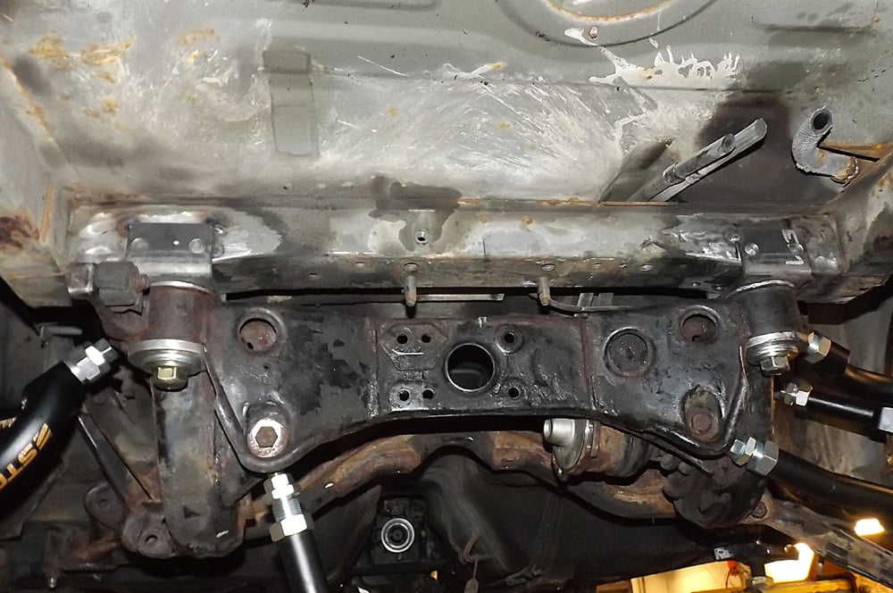
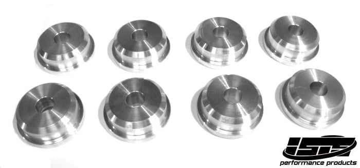

-
I've seen pics from 3 projects in progress using my parts, but I couldn't point you to any that I know have completed the swap
From what I gather it was much the same with shamwow's kit, people bought it, but the number of subframe swapped vehicles didn't correlate… -
Back in stock with M20x1.5 threads… same as those big yellow lock nuts on the axle stubs, p/n: 43262-01P10
New price, 2 pins with berackets as above, plus 2 sleeves for the front to weld to… $190 shipped -
Nice design copy.
Those are welded assemblies right? I would strongly suggest against 4140HT as the embrittlement which happens during welding will be difficult to avoid. Weld can look good, but a sharp impact (like from sliding into a curb) will snap it like nothing was there."produce first.talk second." -
The pins are captive, even if the weld did break, it wouldn't go anywhere…ShamWow;n768913 wrote: Nice design copy.
Those are welded assemblies right? I would strongly suggest against 4140HT as the embrittlement which happens during welding will be difficult to avoid. Weld can look good, but a sharp impact (like from sliding into a curb) will snap it like nothing was there.
They have a double-stepped diameter, one to center in the bracket hole (1"), and another step up on the on the back side (1-1/2"), the weld mainly stops it from turning -
Unless the welding HAZ causes it to shear at the stress riser: the step from the main guide diameter to the attachment 1" diameter. I mean why risk it?"produce first.talk second." -
As you probably all know by now, I made the subframe swap kit to make life easier, so easy that, all you neeeeed is a measuring tape, a pencil, a grinder, and a welder (with appropriate safety precautions for all of that)
After changing my mind about the reversibility (I'll explain later), the combination I chose for my car consists of 2 pins with U-brackets and two z31 pin sleeves… since there's several ways to do this, this is one of them.
Let's start with the rear installation:

What you should notice here is that each bracket has holes in it, it is entirely possible to bolt the rear U-brackets onto the car prior to welding, or even permanently. However, they don't interfere with anything, so the added stiffness of welding them in just makes more sense. The holes are 14mm btw.
The bushings I used are the two-piece as sold by ISIS, but I got replicas from http://bings.ca since he's local. I then proceeded to have the recessed half heads shaved down to 5mm, and put those on top (normally they go on the bottom, the recess is to allow more thread engagement for the nut, since the fat head spaces the whole subframe down more than stock bushings)
You can see washers installed under the z31 axle-flange nuts, but those were used by the shop to avoid having to tighten those nuts all the way, they are lock nuts, and the hardened threads of the pin are a tough squeeze; they don't have to be there.
The pins with brackets were inserted into the installed subframe bushings, then tightened in the subframe prior to raising into position; the position was found by marking the center of the car, and the center of the subframe, that's it…
Now let's move onto the scary front installation:

You may think this would be a hugely difficult step, but it's not; the welded plate shape you see is about 3" long, you need one for top, one for bottom, and two rectangles for the sides, that's it. (repeat for other corner)
Bolt the sleeve onto the pin, cut the bushing pod on the subframe halfway through, lift it into place, weld bottom piece and outer side on to connect them, remove subframe, do the other half… the pieces used were cut with a hand grinder from 1/8" steel plate.
In my case,the fabricator decided to bend up the top pear shaped piece to meet the end of the sleeve at the top, you may have seen other writeups that show the sleeves are taller than the subframe pods, so keeping those plates level would have left about 1cm of sleeve protruding above. It doesn't matter which way you do this, the sleeves have 1/4" wall thickness, and using 1/8" plate for the connectors, it is as rigid as the subframe.
-----
At this point I should mention, the non-reversible way to do the front is not anymore difficult, in fact it might be easier…
You'd need a second pair of pins with U-brackets, where you cut off or unbend one side to form an L (unbending will be impossible without carefully making cuts in the corner and rewelding it solid, it's 5mm plate)… just above where the pin needs to be to use the new subframe without modifying, there is a union of two frame sections, they create a corner that the new L bracket would overlap; the newly flattened part would be welded there, while the remaining bent tab would have to be gusseted to the body and frame inside the corner.
If those two-piece solid bushings are used, the fat end would be put on top, with the recessed one on the bottom, as it was designed, because the front pin would sit a little higher than ideal, therefore needs a little spacing down.
The one part I didn't talk about is all the cutting/hammering involved in clearancing the subframe to the body, that's where the real work is, there's a lot of areas that need to be cut and re-boxed to regain strength, doing this will require numerous test fits, raising and lowering the whole assembly… this is probably 70% of the work involved in the swap.
It's easy to see why a shop will charge you more than you think it will cost, it's about $20 in materials, the rest is labour… I've heard estimates from people who have completed the swap, at 14hrs to 30hrs to complete it.
You may need to ask someone who's completed it, "is it worth it?", and I think most of them will say "hell yes"
Bushings used (same design):
 -
G-E good to see you continue to innovate.
I was following ShamWow's conversion kit for some time and was fortunate to get my hands on one.
It does take some time to get your head around it, and feel that his kit resulted in a close to factory finish.
Not for the faint hearted, you really gotta love your z31 to put in this much effort/hours.
From memory I paid under $360 for all the bits landed in Australia.
The bigger front bushings on ShamWow's kit also add to this and allowed me to use all the original gear when hooking up front mounts.
Here's my build with pics of the s15 subframe both out and in car; http://www.zdriver.com.au/index.php/…t__20#entry349Love z31's as much as I do? Check out my build: http://www.zdriver.com.au/index.php/…__80#entry2219 -
Looks like you welded in a ton more metal than necessary to do the swap, especially at the rear frame section.
The kit I'm offering is the bare essentials, because I make the assumption that if someone can weld it all up, they can cut some scrap plates to finish off the front, either with the sleeves, or by installing 4 pins in the correct locations for the subframe…
The ONLY reason I didn't install the 4 pins myself, is to give myself the option of developing a new stock subframe based rear end, without having to use my road car to do it. -
yeah introduced more metal onto rear as its cross braced ensuring new mounts leverage off old diff centre mounts.
That way it aint going anywhere, however the metal weighed close to nothing, so a small price to pay for strength.
Pretty happy with the upgrades so far.Love z31's as much as I do? Check out my build: http://www.zdriver.com.au/index.php/…__80#entry2219 -
When I first saw that you shipped Z31 Stance all the way to AU only to fit it to inferior S14 knuckles, I wanted to kill myself. Then I saw that you came to your senses later on.
Work looks solid.sigpic -
What makes them inferior exactly?Originally posted by Butter -
Thanks Butter.
While this whole suspension geometry topic is deep, I needed to understand and see the differences for myself before coming to the party.
Once I realised how the s14-15 knuckles would throw out my front suspension and the battle to then try bring it all back, it was a simple decision to go back to z31 cali knuckles.
However I was amazed that the s14 knuckle adaptors I had purchased for v36 calipers were almost an exact fit onto the late model z31 knuckles. Thanks Nissan :-)
The s14/15 rear end is amazing though. Fully adjustable and beautiful to look at compared to the stock z31 rear suspension that now looks ancient to me AND no rear squat under hard acceleration - for a z31 that's just plain weird…
Butter, is there a noticeable difference in track handling between your z31 with the new setup vs. a slightly lighter and newer s14?Love z31's as much as I do? Check out my build: http://www.zdriver.com.au/index.php/…__80#entry2219 -
Oh nvm the fronts :P -
Z31 with an S14 sub is better than an S14 IMO.
Weight is pretty close. The wheelbase is shorter, more responsive. The driving position is more fun, and sitting closer to the rear axle gives you a better sense of feedback.
Also, it's not a generic S-chassis, and people look at you like you're some sort of god because you can drive one of these cars.sigpic -
OK so let's clear the air once and for all since I did get a few msgs and questions about the two swap kits…
Unlike Butter asserts, the kit that I offer, either the 2 pin + 2 sleeve or 4 pin varieties, are not 1/3rd of a kit, they are the exact minimum that needs to be machined, ALL the remaining work is cutting, grinding, welding.
Qestion:
- How to align the subframe without that handy sheet bolted to the original bolt holes?
Answer:
- Well there's two frame rails on the car, you can find the exact center with a measuring tape, and find the center on the subframe, that's it.
- You bolt the two rear adapters into the subframe (with bushings) loosely and lift it into place, all you have to do then is move it left or right to line up the center marks.
- If you can't use a measuring tape, you can't do this swap.
Question:
- How do I connect the sleeves to the subframe without those handy cut tubes and bent pieces?
Answer:
- Exactly the way you cut and notch the car to fit the subframe in the first place!
- Cut some scrap 1/8th plate into the correct shapes and weld them.
- I provide templates you can print out 1:1 scale.
- If you can't use a grinder to cut a few pear shapes and rectangles, you can't do this swap.
There's no magic to the swap, Butter drilled through his car and dropped in threaded rod, Andrew welded bolts to flat plates upside down, and I'm sure there's other methods used.
It's a simple but very expensive operation. I've heard everything from $800 to $1600 for a shop to do the swap, and that doesn't include all the arms/bushings. If you check amreboot's thread, he did most of the work himself and it still cost well over $3000 including differential, custom driveshaft, etc.
But that's the price you pay when you have 600hp and don't want to break anything

Copyright © 2006–. All rights reserved. Privacy Policy